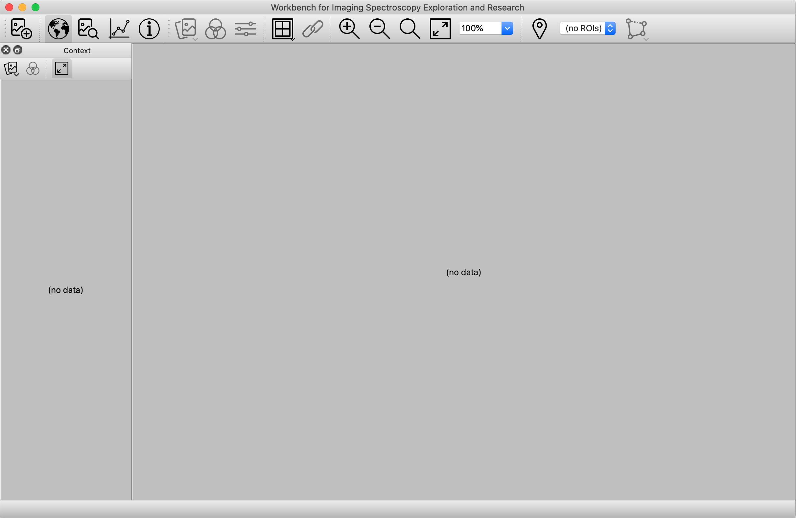
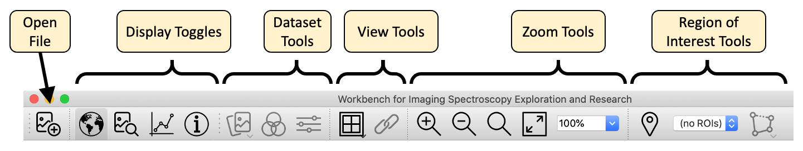
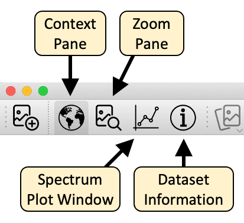
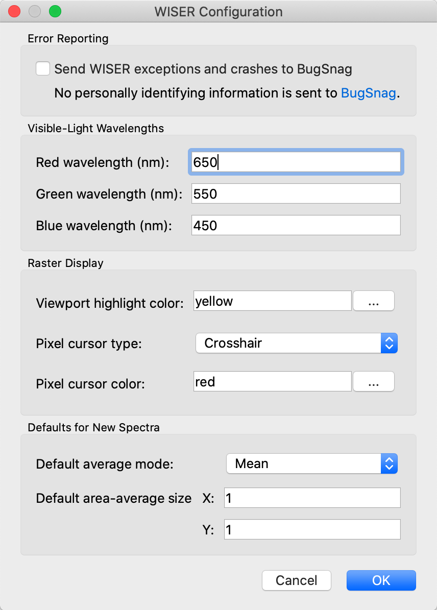
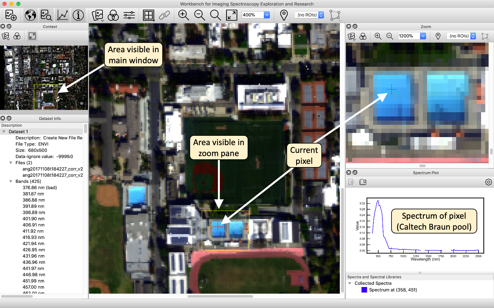
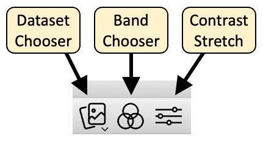
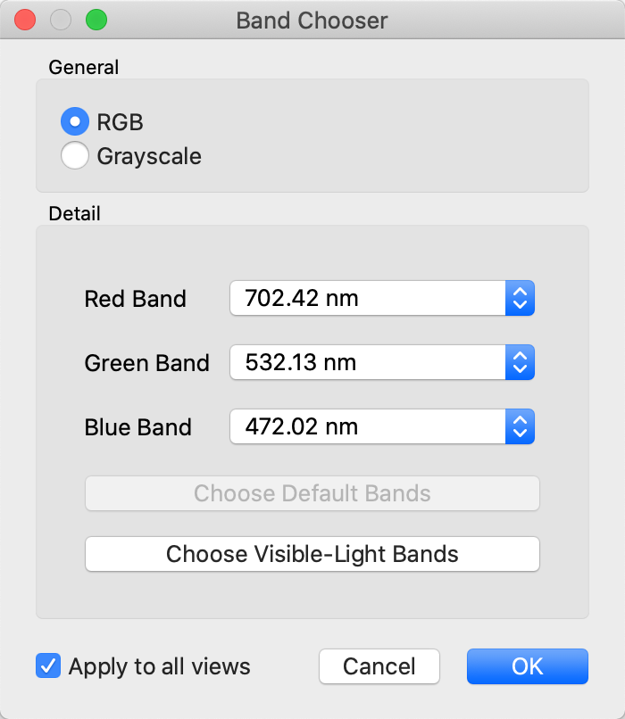
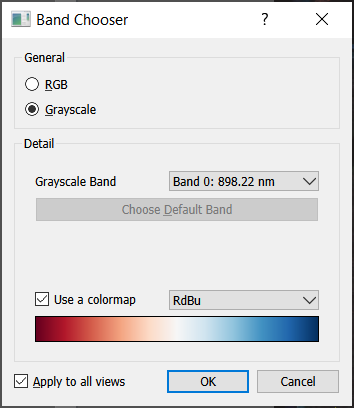
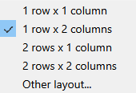
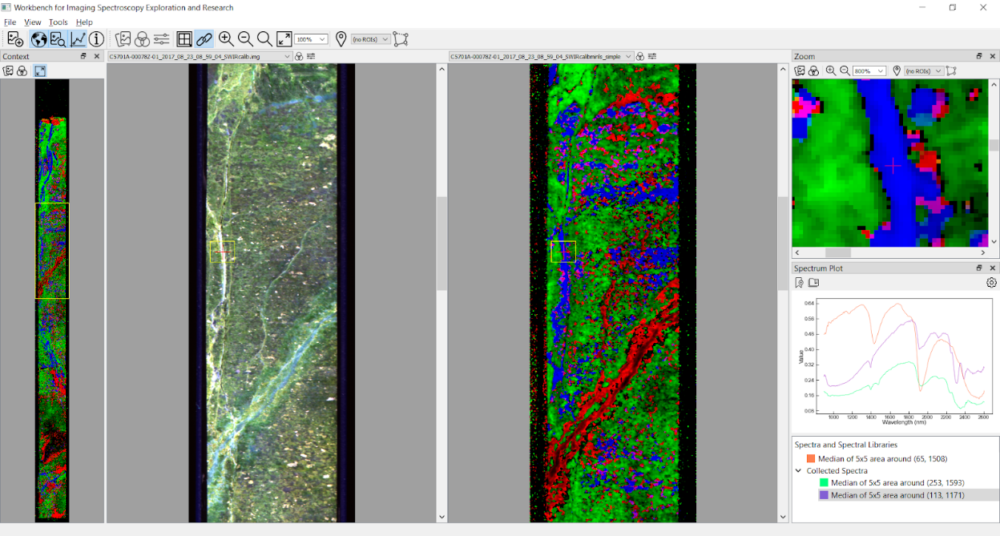

Interface Overview#
WISER Overview#
The goal of WISER is to provide an intuitive and configurable user interface that supports many different workflows and styles of interaction. When WISER is started, the UI looks like this:
{kind=link}

The WISER interface provides multiple panes for displaying raster data at varying levels of magnification. The Context Pane starts out on the left side of the UI, and shows the raster data “scaled out,” so that either one or both dimensions are fully visible within the pane. The primary viewing area is called the Main Window, providing more detailed interactions with raster data, possibly scaled up to as much as 1600%. In the above screenshot, no raster data is loaded yet, so these areas display “(no data)”.
Across the top of the Main Window is the Main Toolbar, which provides various tools to work with raster data:
{kind=link}

The buttons marked “Display Toggles” will show and hide specific tools for interacting with spectral data. These buttons are as follows:
{kind=link}

These tools are described in subsequent sections.
NOTE: WISER can also be extended with custom functionality through its plugin API — see the Extending WISER section of this documentation.
WISER Configuration#
WISER provides a configuration panel for specifying common configuration across the various tools. You can access these properties through the WISER menubar. For example, on macOS you can access “WISER” -> “Preferences” to show this dialog:
{kind=link}

These settings are saved on disk so that they don’t need to be specified every time. Some additional details are given in the following sections.
WISER Crash and Error Reporting#
WISER is capable of sending crash reports to an online service called BugSnag. This option is off by default, but it is very helpful if you turn this feature on so that application errors and crashes can be identified and addressed automatically. No personally identifying information is sent to BugSnag, but some users may still not want to leave such a feature on.
Wavelengths for Red/Green/Blue Colors#
For spectral data sets that include visible-light frequencies, WISER is able to automatically choose “true-color” bands that are close to the frequencies of red, green and blue light. However, different data sets and instruments may require tweaking of what is considered “red”, “green” or “blue”. Thus, WISER allows the user to configure these values.
Viewing an Image#
Here is a screenshot of WISER after loading AVIRIS data of the Caltech campus and the surrounding Pasadena area.
{kind=link}

In this image, all of the different tools have been shown using the display toggle buttons in the main toolbar: the context pane, the main window and the zoom pane, as well as the spectral plot window and the dataset information window. All of these components are dockable, and can be moved or resized within the WISER user interface. They can also be undocked from the UI, so that they appear as separate windows. Arrange WISER’s user interface however you like it best! As the snapshot indicates, the area visible in the zoom pane is indicated in the main window. Correspondingly, the area visible in the main window is indicated in the context window. (Tip: The color of this viewport highlight can be changed in the WISER configuration dialog.) Mouse-clicks or scrolling within the various display windows will update the other windows. Mouse clicks within the main or zoom windows will update the spectrum plot window with the pixel’s spectrum.
Dataset Tools#
The dataset toolbar buttons provide useful operations to switch between datasets, change what bands are being displayed, and to adjust the contrast stretch of the bands being displayed. Note that all raster display windows have one or more of these buttons, allowing for control of how raster data is displayed.
{kind=link}

Dataset Chooser#
The dataset chooser simply allows the user to change what data set is being displayed in a given pane. When clicked, the dataset chooser will show a pop-up menu listing all data sets currently loaded, and selecting a different data set will switch the display to that data set.
Band Chooser#
The band chooser shows a dialog that gives the user significant control over what bands are being displayed, and whether the image is to be shown in RGB mode (three bands) or grayscale mode (one band only).
{kind=link}

When the grayscale or single band option is selected in the Band Chooser, WISER can display with a color bar or gradient.
{kind=link}

Besides letting the user select any combination of bands, the band chooser also exposes the ability to select the dataset’s default bands, if any were indicated in the original data file. Finally, if the dataset specifies wavelengths or frequencies for each band, and if these wavelengths are near the red/green/blue frequencies specified in WISER’s global configuration, the band chooser can automatically choose the bands closest to these frequencies.
Note that if a data set does not have default display bands, or if the data set doesn’t have visible-light frequencies, the corresponding button in the dialog will be disabled.
Grid View and Image Linking#
WISER allows simultaneous viewing of multiple images in the main window through the grid view, and images of the same size can be linked. Any grid dimensions can be input. Click the grid icon to split or unsplit the main view.
{kind=link}

Note that, once images are displayed in a grid, the band selector and contrast stretch options are available above each image and not in the main WISER toolbar.
{kind=link}

Images in the grid can only be linked if all images open in WISER have the same spatial dimensions.